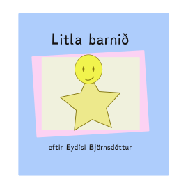
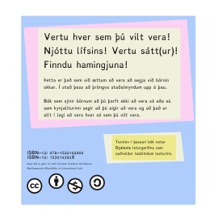

Engill og Þengill

Láta mér líða vel?
Væri lífið ekki betra ef allir væru glaðir með sig og sitt? Svo glaðir að það væri ekki þörf fyrir öfund eða eigingirni?
En þetta getur stundum bara verið ansi snúið.
Bók fyrir þessar stundir þegar okkur tekst ekki að vera góð við aðra. Og þegar við erum ekki góð við okkur sjálf. Bók sem minnir okkur á mikilvægi þess að líða vel.
Litla barnið
 
Vertu hver sem þú vilt vera! Njóttu lífsins! Vertu sátt(ur)!
Þetta er það sem við ættum að vera að segja við börnin okkar. Í stað þess að þröngva staðalmyndum upp á þau.
Bók sem sýnir börnum að þú þarft ekki að vera sá eða sú sem kynjaliturinn segir að þú eigir að vera og að það er allt í lagi að vera hver sá sem þú vilt vera.


Hvers vegna Litla barnið?
Ég hef oft heyrt foreldra svekkja sig yfir því að þurfa að útskýra fyrir krílunum sínum að konur geti nú líka verið læknar eða að karlmenn megi alveg vera ritarar. Ég hef líka hitt marga sem eru leiðir á því að klæða nýfætt barn í bleikt eða að horfa upp á að stráknum sínum sé sagt að hann megi ekki leika með dúkkur af því að það sé of stelpulegt.
Sjálf hef ég verið vonsvikin vegna kynjastaðalmynda og áhrifum þeirra á dóttur mína. Eitt af mörgum slíkum tilfellum átti sér stað stuttu eftir að hún byrjaði á leikskóla. Ég hef sagt þessa sögu mörgum sinnum og mun örugglega segja hana oft aftur, því ég virðist ekki geta gleymt þessu. Hún var mjög hrifin af ákveðnum barnaþætti þegar hún var 3 ára. Suma daga var hún stelpan í þættinum, klæddi sig í bleikt og dansaði um allt. Aðra daga var hún hetjan, bláklædd og bjargaði deginum. Frábært, hvað sem gaf henni gleði. Síðan fékk hún að velja nýja úlpu í afmælisgjöf frá ömmu.
Hún valdi bláa úlpu með andliti hetjunnar. Hún var alsæl. Hún var svo stolt af úlpunni sinni þegar ég gekk með henni á leikskólann. Þegar við komum þangað spurði strákur nokkur “Ert þú strákur?”. Hún svaraði ‘Nei’. Þá sagði hann ‘Þú mátt ekki vera í þessari úlpu. Þú ert ekki strákur.’.
Næstu daga gat ég ekki sannfært dóttur mína um að fara í bláu úlpuna sína. Sama hvað ég sagði þá neitaði hún. Áhrif félagsþrýstings voru sterkari en elsku mamma. Sterkari en hennar eigin hugsanir og skoðanir. Það liðu margar vikur áður en hún sættist aftur við bláu úlpuna.
Það hafa mörg ár liðið síðan og ég get ekki ennþá sæst við þessa minningu. Kannski er það þess vegna sem þessi bók varð til. Ég veit ekki hvort hún geri málefninu nægilega góð skil. En ég vona að hún gleðji þá sem deila með mér þeirri trú minni að börn ættu bara að fá að vera börn. Ekki kynjastaðalmyndir.